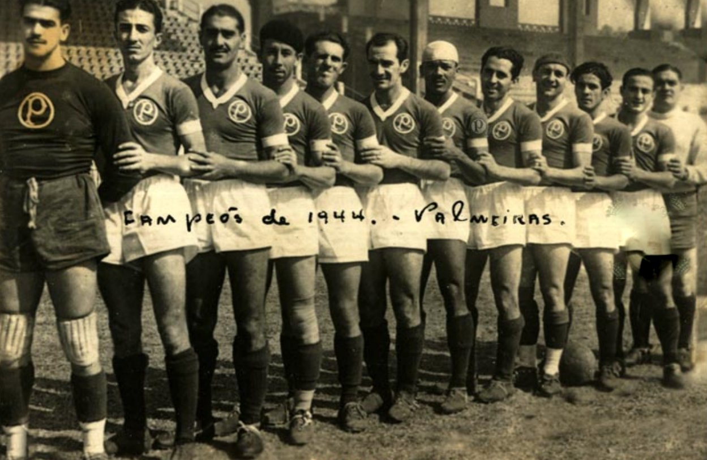
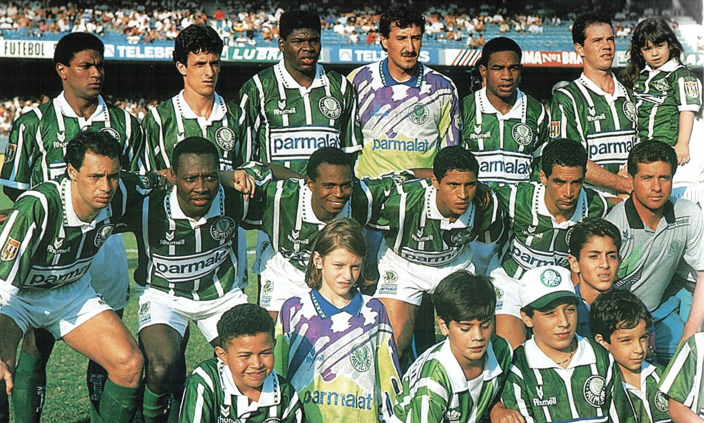
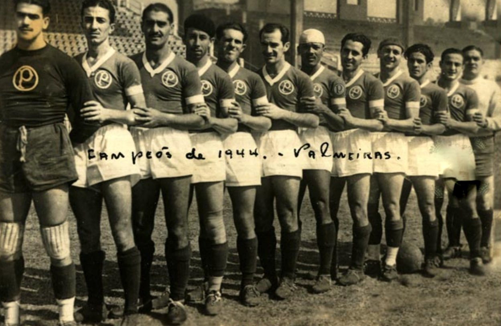
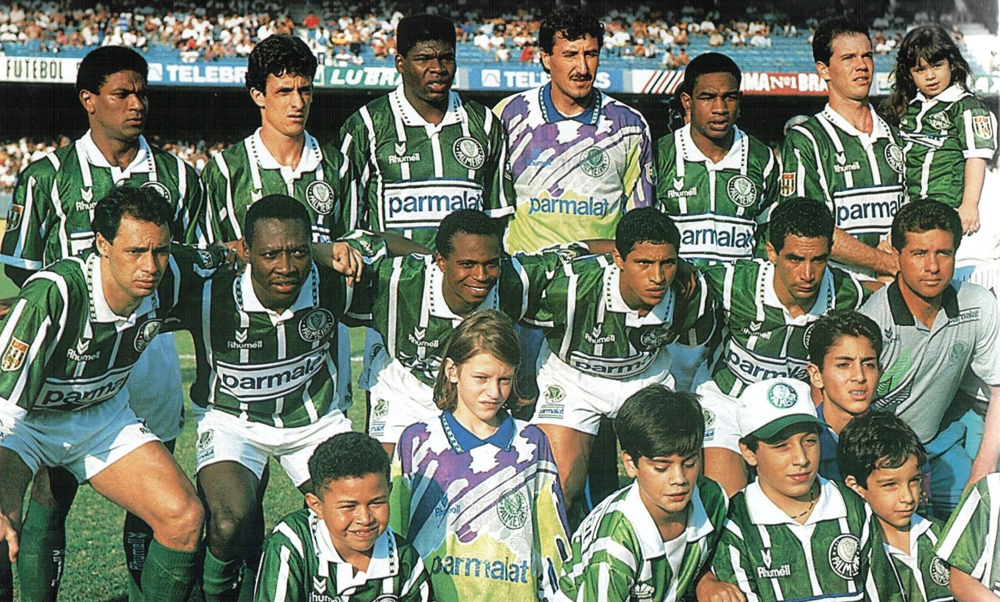
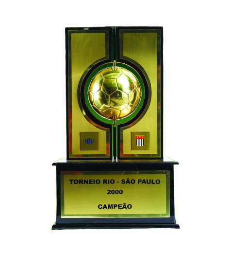
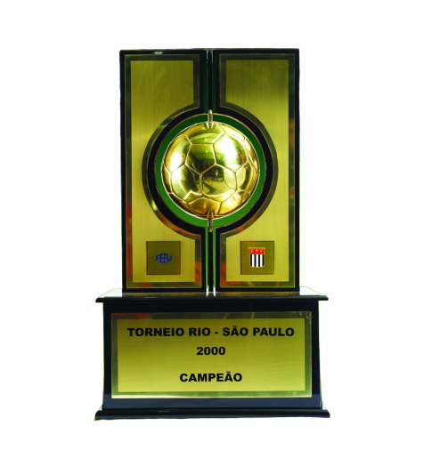

Em 22 de julho de 1951, o Palmeiras realizou um dos maiores feitos de sua gloriosa trajetória. Foi neste dia, diante da forte e estrelada Juventus de Turim, que o Verdão conquistou o Torneio Internacional de Clubes Campeões, consolidado no futebol como o primeiro campeonato mundial interclubes da história. O grito de campeão veio com uma vitória e um empate diante da Vecchia Signora nas finais, disputadas no Maracanã lotado de brasileiros preenchidos de esperança e alegria.
Em 16 de junho de 1999, o Verdão faturou, finalmente, o único título que faltava em sua
galeria.
Naquele ano, a triunfante parceria com a multinacional Parmalat atingia seu ponto máximo,
finalizando com chave de ouro um projeto inovador iniciado sete anos antes.
Naquele ano, nascia São Marcos, iluminado guardião do gol alviverde e último jogador da
história a vestir apenas a camisa do Palmeiras durante toda a carreira.
Campeão da Copa do Brasil em maio e, assim, garantido na Copa Libertadores de 1999, o Palmeiras foi um dos 20 times convidados (os critérios utilizados foram a importância e a tradição) para a disputa da primeira edição da Copa Mercosul e encarou o torneio continental como um teste de luxo.
Na final, assim como nas decisões da Copa do Brasil de meses atrás e de 1996, o oponente foi o Cruzeiro. A equipe mineira, embora tenha perdido o título nacional para o Verdão na mesma temporada, havia eliminado o Alviverde nas quartas de final do Brasileiro semanas antes. Ou seja, era um clássico de tirar o fôlego.
No primeiro embate, em Belo Horizonte-MG, 2 a 1 para o clube celeste. Na volta, no dia 26 de dezembro (sim, um dia depois do Natal), o Verdão deu o troco: 3 a 1, com gols de Cléber, Oséas e Paulo Nunes – à época, o saldo de gols não valia como critério de desempate. Por fim, na terceira e derradeira partida, novamente no Palestra, emoções à flor da pele. Equilíbrio. Velloso viu sua trave balançar duas vezes. Júnior Baiano fez o mesmo com Dida. Até que, aos 16 minutos do segundo tempo, Júnior Baiano soltou outra bomba de falta, o arqueiro rival soltou e Chiqui Arce, bem colocado, balançou as redes: 1 a 0 no placar e festa no chiqueiro!


O Palmeiras é considerado o maior campeão nacional, são 10 títulos de Campeonatos Brasileiros, cada elenco consagrado para tornar o verdão cada vez mais forte dentro da sua casa. Cada título uma superação, cada superação um recorde diferente, cada recorde, um Palmeiras mais gigante!
Quem tem mais, tem 10!

A conquista de 1998 foi marcante, pois, após vencer tudo o que podia no Brasil, garantiu a vaga que possibilitou a conquista da América no ano seguinte. O planejamento de Luiz Felipe Scolari era justamente esse – vencer a competição doméstica e, na sequência, sagrar-se campeão da Libertadores.
Quebrando um jejum de mais de dez anos sem títulos nacionais, Luiz Felipe Scolari e seus comandados conquistaram, em julho de 2012, a segunda Copa do Brasil da história do Palmeiras. Após a conquista da Copa dos Campeões em 2000, a torcida palestrina só comemorou um Campeonato Paulista em 2008 até a cabeçada de Betinho, na final contra o Coritiba, quebrar esta escrita.
Após temporada turbulenta em 2014, a palavra “reestruturação” foi a principal cartada palmeirense para o ano de 2015. O primeiro passo foi dado na diretoria de futebol, com Alexandre Mattos, que encabeçou a reformulação do departamento trazendo novos profissionais de diversas áreas e 25 novos jogadores ao longo da temporada. Além disso, o clube acertou o patrocínio máster da camisa com a Crefisa e viu seu programa de sócio-torcedor Avanti decolar e atingir o topo da lista entre os clubes brasileiros. O ano foi marcado também pela consolidação do Allianz Parque como aliado na ascensão alviverde.
 



Segundo maior campeão do estado junto com o rival Santos, com 22 títulos cada. O Palmeiras tem uma tradição indiscutível no campeonato estadual, nas suas primers participações ja incomodava os rivais, sendo que na sua segunda e terceira participação alcançou o vice-campeonato e na sua quarta participação ja se consagrou campeão do torneio.
 
 O primeiro campeão do campeonato em 1933, levantou o mesmo caneco em 1951, ano que o time conquistou 5 títulos em sequência, as 5 coroas.
Em 1965, a Primeria Academia conquistou o terceiro Torneio Rio-São Paulo da história do Palmeiras, representando o primeiro título interestadual da Academia, um conceito de jogar que encantou os espectadores, realizando jogos que, até hoje, são considerados verdadeiras aulas de futebol.
Em 1993, o adversário na final, foi um invicto Corinthians (cinco vitórias e um empate), mas que não conseguiu parar ímpeto de Edmundo – no primeiro jogo, o atacante precisou de meros cinco minutos para vazar duas vezes a meta do goleiro Ronaldo. No segundo confronto, com o Verdão atuando praticamente com sua equipe reserva, bastou um 0 a 0 para garantir mais um título palmeirense sob o maior rival e o quarto Torneio Rio-São Paulo da história do clube.
Já em 2000, o Palmeiras alcançou o topo da lista dos maiores campeões do torneio. Contando com um excelente time, o Vasco do lateral Gilberto, do meio-campo Juninho Pernambucano e dos atacantes Edmundo, Romário e Viola chegou como favorito às finais, mas os gols marcados por César Sampaio e Pena, em pleno Maracanã, botaram em cheque o favoritismo carioca. Após o 2 a 1 conquistado no Rio de Janeiro, o Palmeiras chegou tranquilo ao Morumbi e precisou de pouco mais do que sete minutos para vazar três vezes a meta do goleiro Helton – no final da primeira etapa, Pena, Argel e Euller abriram a vantagem palestrina. No segundo tempo, Arce converteu pênalti sofrido pelo Filho do Vento e garantiu o penúltimo título da Era Parmalat.